- Overview
- Restrictions
- Installation
- Configuration
- Link to Fill a Form
- Force User Login Property
- Example - Link to Fill a Form
- Customized Messages After Submitting a Form - Link to Fill a Form
- Using a Field to Generate Action Links
- Example - Using a Field to Generate Action Links
- Customized Messages After Submitting the Answer - Use a Field to Generate Actions Links
- Custom Actions
- Customizing the actionsByEmail.html Template
- Actions by Email Log
Overview
Actions by Email is a feature available in the ProcessMaker Enterprise Edition. This feature allows users to receive an email where they can send information to ProcessMaker cases and also route those cases onto the next task in the process. The email can contain a link to a form stored on the ProcessMaker server to be filled out and submitted, a group of links that can be clicked to accept or reject information in the email, or multiple different options customized by the designer. Actions by Email was originally created to allow people who are not registered users in ProcessMaker to work on cases, but it can also be used by registered users who wish to work on cases without having to log into the ProcessMaker interface.
Actions by Email used to be an enterprise plugin, but currently it is an integrated feature available in ProcessMaker Enterprise Edition.
It comprises four options:
- Link to fill a form: A link to a form is sent to the user's email. When the user submits the form, it saves any data entered into the form and routes the case to the next task in the process.
- Use a field to generate actions links: The user will be able to approve or reject the information sent via email. It routes the case onto the next task depending on the link that the user clicked in the email.
- Email response: Send the email body in a case variable that allows work off line. Available Version: As of ProcessMaker 3.4.0.
- Custom actions: This option gives designers the ability to add and customize the response options sent to users in the email by adding
csscode to each of these options.
Note: The email sent by Actions by Email is resent when the case is unpaused, reassigned or uncancelled.
Restrictions
Please consider the following restrictions before using the Actions by Email feature:
- Actions by Email does NOT work with tasks that have self service and self service value based assignment routing rules, because these tasks need to be routed to a specific user in ProcessMaker.
- The Actions by Email feature cannot be used on the first task of a process. The configuration of the Actions By Email feature must be done only from the second task of the process.
- As a best practice, do not configure the current task to use Actions by Email, and then route cases of this task from the email to tasks that require manual assignment. This will cause errors in case run time because there is no way in the email to manually select a user in which to assign the task.
- As a best practice, do not configure a task to use manual timing control if that task requires Action by Email. If you do so, process users cannot change the task duration time during run time.
Installation
ProcessMaker Enterprise edition automatically includes the Actions by Email feature after the Enterprise license is activated. To check whether the Actions by Email feature is available, log into ProcessMaker as a user such as "admin" with the PM_SETUP_ADVANCE permission in their role. Then, go to Admin > Plugins > Enterprise Manager and click on the Enterprise Features tab to see the list of available features.

Note: If working with both BPMN and classic processes, make sure that the license provided includes information about the feature as well as information about the plugin.
Configuration
To start using the Actions by Email feature, open a process and right click on the task that will be routed via email. Select Properties in the context menu and go to the Actions by Email option to configure the type of email that will be sent to the user.

Read the following sections to learn how to work with each one of these options.
- Link to Fill a Form
- Use a Field to Generate Action Links
- Email Response. Available Version: As of ProcessMaker 3.4.0.
- Custom Actions
Link to Fill a Form
In this option, the email sent to the user will contain a link that will redirect to the Dynaform assigned to the task. After the user fills out the form and clicks on the submit button, any data entered will be saved to the case. To configure this type of email, complete the following fields:

- Email Template: (Required) Select the template file that will be used as the content of the email. Actions By Email includes a default template named actionsByEmail.html that can be used for testing purposes. To learn how to create an email template, see this documentation.
- Dynaform: Select the Dynaform where the information will be filled when the user sends the data.
- Subject by Email: Enter the text of the email's subject. This text can include custom variables. These variable values can come from previous Dynaforms fields or can be obtained from a trigger.
- Email Variable: Either enter the email address of the person who will receive the email or select the variable that holds the recipient's email address. If this field is left blank, the next assigned user's email will be used by default.
- Email Account: Select the email account that will send the email. As of ProcessMaker 3.3.0, the dropdown lists the Default email account and Sender Email of all the accounts configured in the email servers of the workspace. Otherwise, the Sender Account value replaces Sender Email if it is empty when the email engine is SMTP (PHP Mailer) or "Mail (PHP)" replaces Sender Email when the email engine is Mail (PHP). See this documentation to learn more about Sender Email, Sender Account, SMTP and Mail.
- Email From Format: Select one of two options:
- Assigned User: The email will be sent using the name of the user who completed the previous task.
Note: If an Actions by Email step occurs after a script Task, then the log will not show any user because a user did not run the Actions by Email step.
- Email Account Settings: The email will be sent using the From Mail and From Name values defined in the configuration of the email server that was selected in the Email Account field.
- Assigned User: The email will be sent using the name of the user who completed the previous task.
- Register a Case Note when the recipient submits the Response: If this option is checked, a case note is added when the Dynaform is submitted.
- Force user login: If this option is checked, the user will have to log into ProcessMaker before being able to fill out the form. Read the Force User Login section for more information.
Finally, click on Save to save the configuration.
Note: The Actions By Email validates variables correctly that are send by email. These variables are decrypted correctly in Actions by Email URLs.
Force User Login Property
The Force User Login property verifies that the same user that was assigned to the Actions by Email task is the one that is executing the action by email. To verify this, the user is redirected to the ProcessMaker login screen.

If the user that logs in is not the user that is assigned to the Actions by Email task, then the data will not be submitted and the Actions by Email link will still available for the correct user to submit the data.
Also take into consideration that the email address where the action is sent by email must belong to the user that will be assigned to the Action by Email task. The Force User Login property is available in all the three configuration types.
For Windows Single Sign-On users, since ProcessMaker is directly accessed with a Windows account, it is not neccessary to log into ProcessMaker using any of the three options unless accessing from another terminal.
Example - Link to Fill a Form
In the following process, the Support Lead must review a request sent via email by an Applicant.
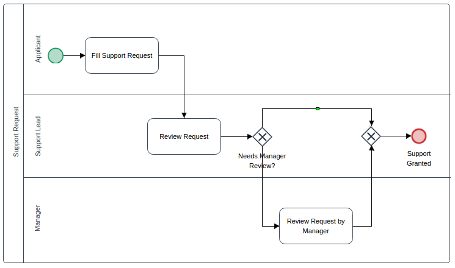
First, create the following string variables:
- APPLICANT_EMAIL
- APPLICANT_NAME
- REVIEW_STATUS with two options: "Approved" and "Rejected".
- SUBJECT_EMAIL
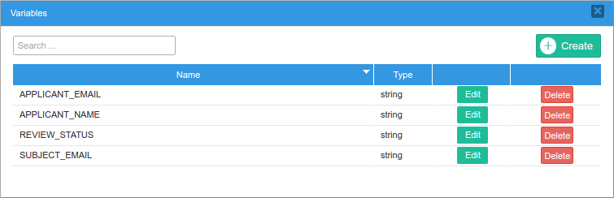
Then, create a Dynaform named "Review Request" with the following fields:
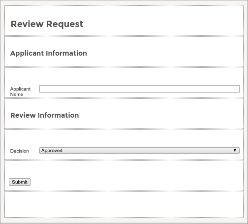
- A textbox with the label "Applicant Name" and assigned to the "APPLICANT_NAME" variable.
- A dropdown with the label "Decision" and assigned to the "REVIEW_STATUS" variable.
The "APPLICANT_EMAIL" and "SUBJECT_EMAIL" variables will be used to set the user's email address and the email's subject using a trigger. Create the following trigger:
//lookup the user assigned to the next task in the case:
$query = "SELECT USR_UID FROM APP_DELEGATION WHERE APP_UID='$caseId' AND
DEL_INDEX=(SELECT MAX(DEL_INDEX) FROM APP_DELEGATION WHERE APP_UID='$caseId')";
$result = executeQuery($query);
$aUser = userInfo($result[1]['USR_UID']);
@@APPLICANT_EMAIL = $aUser['mail'];
//lookup the case number:
$result = executeQuery("select APP_NUMBER from APPLICATION where APP_UID='$caseId'");
@@SUBJECT_EMAIL = "The request number: {$result[1]['APP_NUMBER']} needs to be reviewed";
This trigger needs to be set to fire Before Routing in the task before the task set to use Actions by Email (i.e., the Fill Support Request task).
Note: Triggers assigned before and after a Dynaform will not be executed in link to fill a form. This because those triggers are assigned to Steps and not to Dynaforms.
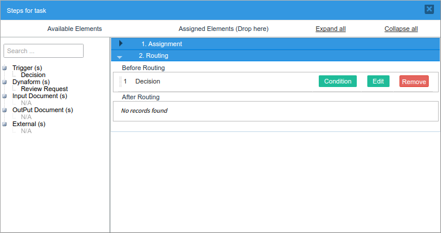
Since the Support Lead will receive the form via email, Actions by Email must be configured in the "Review Request" task. Right click on that task, go to Properties, then to the Actions by Email tab and fill in the following information:

- Email Template: Select the default template named actionsByEmail.html.
- Dynaform: Choose the Review Request form.
- Subject by Email: Choose the @@SUBJECT_EMAIL variable.
- Email Variable: Choose the @@APPLICANT_EMAIL variable.
- Register a Case Note when the recipient submits the Response: Check the box to create a case note.
Save the changes and execute a case. When the Applicant sends the information to the Support Lead, this last user will receive the following email notification:

Click on the Please complete this form link and the Dynaform created previously will be displayed:

Fill out the form and click on Submit. The information sent will be confirmed with the following message:

The case will be routed to the next task, which in this example is the Review Request by Manager task.
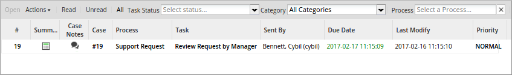
Since the Register a Case Note option was checked in the Actions by Email configuration, the following case note was created when the user filled out the form. Remember that to access a process's case notes, the user must have a case note permission.

Don't forget that the Actions by Email template that was used in this example can be fully customized.
Customized Messages After Submitting a Form - Link to Fill a Form
The messages displayed after submitting a form have labels that can be customized by editing the processmaker.en.po translation file. These labels are located in the translation file and they are:
- ID_ABE_INFORMATION_SUBMITTED: Message label displayed after submitting the form.
- ID_ABE_FORM_ALREADY_FILLED: Message label displayed after submitting the form and again is clicked the action link.
Using a Field to Generate Action Links
This option generates a link corresponding to the field chosen in the email. The options to be filled in are the following:

- Email Template: (Required). Select the template file that will be used as the content of the email. Actions By Email includes a default template file named actionsByEmail.html that can be used for testing purposes. To learn how to create an email template, see this documentation.
- Dynaform: Select one of the Dynaforms already created in the project where the information will be filled in when the user sends the data.
- Subject by Email: Enter the text of the email's subject line. This text can include a custom variable whose content will be inserted into the subject line. This variable can come from a previous Dynaform field or be created in a trigger.
- Email Variable: Either enter the email address of the person who will receive the email or select a variable that holds the recipient's email address. If this field is left blank, the next assigned user's email will be used by default.
- Variable Sent in Email: This option is available only if the "Use a field to generate actions link" option is selected from the dropdown menu in the Type field. Select the variable that will be sent in the email and will hold the value of the option selected by the user in the email. It only works for the following fields: dropdown, radiogroup and checkbox.
- Email Account: Select the email account that will send the email. As of ProcessMaker 3.3.0, the dropdown lists the Default email account and Sender Email of all the accounts configured in the email servers of the workspace. Otherwise, the Sender Account value replaces Sender Email if it is empty when the email engine is SMTP (PHP Mailer) or "Mail (PHP)" replaces Sender Email when the email engine is Mail (PHP). See this documentation to learn more about Sender Email, Sender Account, SMTP and Mail.
- Email From Format: Select one of the two options:
- Assigned User: The email will be sent using the name of the user who completed the previous task.
Note: If an Actions by Email step occurs after a script Task, then the log will not show any user because a user did not run the Actions by Email step.
- Email Account Settings: The email will be sent using the From Mail and From Name values defined in the configuration of the email server that was selected in the Email Account field.
- Assigned User: The email will be sent using the name of the user who completed the previous task.
- Register a Case Note when the recipient submits the Response: If this option is checked, a case note is added when the Dynaform is submitted.
- Force user login: If this feature is checked, the user will have to log into ProcessMaker before being able to submit the action. Please read the Force User Login section for more information.
Finally, click on the Save button to save or modify the configuration.
Note: The Actions By Email validates variables correctly that are send by email. These variables are decrypted correctly in Actions by Email URLs.
Example - Using a Field to Generate Action Links
The following example will demonstrate how this option works.
First, create the following string variables:
- Employee_Last_Name
- Employee_Name
- Request_Details
- Status with two options: "Approved" and "Rejected".
- Subject_Email
- Supervisor_Email
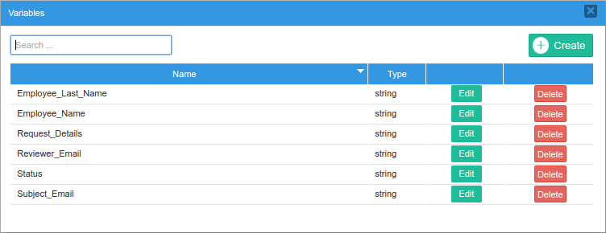
Then, create the "Employee Support Request Form" Dynaform where the employee will fill in their request to submit it for review.
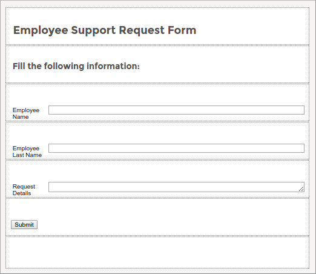
This Dynaform has the following controls:
- A textbox with the label "Employee Name", related to the "Employee_Name" variable.
- A textbox with the label "Employee Last Name", related to the "Employee_Last_Name" variable.
- A textarea with the label "Request Details", related to the "Request_Details" variable.
Save the Dynaform and export it since it will be used in the second Dynaform. Once done, close the form.
Assign the "Employee Support Request Form" Dynaform to the "Fill support request" task.
Now, create a second Dynaform called "Review Supervisor Request" and import the first Dynaform into this new Dynaform. Add a dropdown control related to the string variable named "Status" before the "Submit" button.
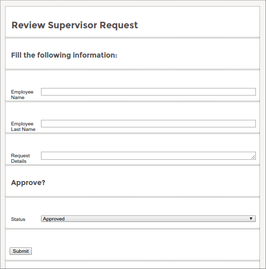
The email sent to the Supervisor to review the employee request will be based on this second Dynaform.
Create a new template called "tmpEmployeeSupportRequest" and add the following code in the body of the template using the HTML editor.
<p><b>Applicant Name:</b> @@Employee_Name @@Employee_Last_Name</p>
<p><b>Request Details:</b> @@Request_Details</p>
<p></p>
<p><strong>@#__ABE__</strong></p>
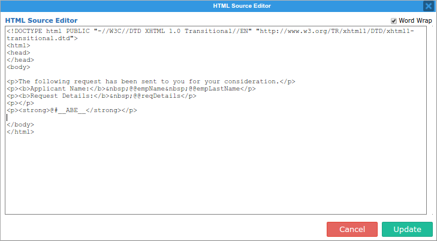
Do not forget to add the @#__ABE__ variable to the template. This variable allows the addition of response options in the email.
Now, configure the second task so that this request is sent to the supervisor's email, giving them the ability to approve or reject the request.

- Email Template: Choose the tmpEmployeeSupportRequest template.
- Dynaform: Choose the Review Supervisor Request form.
- Subject by email: Choose the @@Subject_Email variable.
- Email variable: Choose the @@Supervisor_Email variable.
- Variable sent in email: Choose the @@Status variable.
Save the changes. After that, create a new trigger named "Fill Email Variables" with the following code:
//lookup the user assigned to the next task in the case:
$query = "SELECT USR_UID FROM APP_DELEGATION WHERE APP_UID='$caseId' AND DEL_INDEX=(SELECT MAX(DEL_INDEX) FROM APP_DELEGATION WHERE APP_UID='$caseId')";
$result = executeQuery($query);
$aUser = userInfo($result[1]['USR_UID']);
@@Supervisor_Email = $aUser['mail'];
//lookup the case number:
$result = executeQuery("select APP_NUMBER from APPLICATION where APP_UID='$caseId'");
@@Subject_Email = "The request number: {$result[1]['APP_NUMBER']} needs to be reviewed";
Assign this trigger to the "Fill support request" task in the After Routing step.
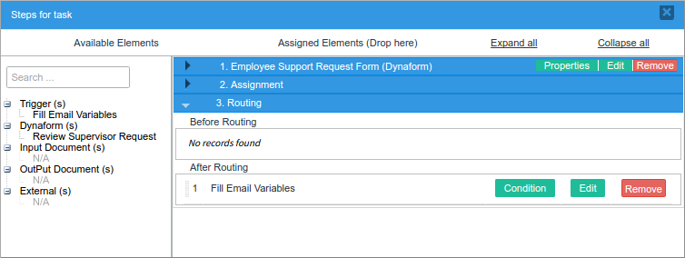
Also, configure the exclusive gateway using the "Status" variable sent in the email to store the supervisor's response and decide whether the request is rejected (the flow will go the the end event) or approved (the flow will go to the "Review Request by Manager" task). Right click on the gateway and add the following conditions:
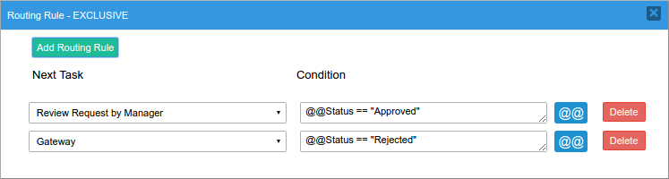
"Gateway" -> @@Status == "Rejected"
Save the changes and execute a case.
When the employee sends the information to the Support Lead, this last user will receive the following email notification:

Notice that the content of the email sent is the content set in the created template. Nevertheless, if the variable that includes the action links (which in this case are the options in the dropdown menu) is not included in the Dynaform, these options won't be sent in the email.
Users who receive the email can use these action links to submit their response directly from the email. In this example, the supervisor will approve the request by clicking on "Approve".
After clicking on one of the options, the case is routed to the next task (in this process the response is also evaluated by the gateway). The following message is shown to the user.

As set in the configuration, a case note is also added to the case.
Customized Messages After Submitting the Answer - Use a Field to Generate Actions Links
The messages displayed after submitting an answer have labels that can be customized by editing the processmaker.en.po translation file. These labels are located in the translation file and they are:
- ID_ABE_ANSWER_SUBMITTED: Message label displayed after submitting the answer.
- ID_ABE_RESPONSE_SENT: Message label displayed after submitting the answer and again is clicked the action link.
Custom Actions
This option gives designers the ability to add and customize the response options sent to users by adding CSS code to each of these options. These options are added at the end of the email template to be sent and makes it easier for users to select only one choice. When selecting this option in the configuration of the Actions by Email, the following window is shown:

The information to be completed is the following:
- Email Account: Select the email account that will send the email. As of ProcessMaker 3.3.0, the dropdown lists the Default email account and Sender Email of all the accounts configured in the email servers of the workspace. Otherwise, the Sender Account value replaces Sender Email if it is empty when the email engine is SMTP (PHP Mailer) or "Mail (PHP)" replaces Sender Email when the email engine is Mail (PHP). See this documentation to learn more about Sender Email, Sender Account, SMTP and Mail.
- Email From Format: Select one of the two options:
- Assigned User: The email will be sent using the name of the user who completed the previous task.
Note: If an Actions by Email step occurs after a script Task, then the log will not show any user because a user did not run the Actions by Email step.
- Email Account Settings: The email will be sent using the From Mail and From Name values defined in the configuration of the email server that was selected in the Email Account field.
- Assigned User: The email will be sent using the name of the user who completed the previous task.
- Email Variable: Either enter the email address of the person who will receive the email or select a variable that holds the recipient's email address. If this field is left blank, the next assigned user's email will be used by default.
- Subject by Email: Enter the text of the email's subject line. This text can include a custom variable whose content will be inserted into the subject line. This variable can come from a previous Dynaform field or be created in a trigger.
- Email Template: (Required) Select the template file that will be used as the content of the email. Actions By Email includes a default template file named actionsByEmail.html that can be used for testing purposes. To learn how to create an email template, see this documentation.
- Store Result in: Select the case variable where the value of the option selected by the user will be stored.
- Register a Case Note when the recipient submits the Response: If this option is checked, a case note is added when the Dynaform is submitted.
- Force user login: If this feature is checked, it is necessary to log into ProcessMaker before being able to submit the actions. Please read the Force User Login section for more information.
Options: In this section, the options that will be sent to the users in the email will be selected. Each option added must have a value, which will be stored in the previously selected variable once the users select one option and send the response. Each option must also have a label that will be shown to the user, and can be customized with css code so it is easier for users to identify each option in the email. For example:
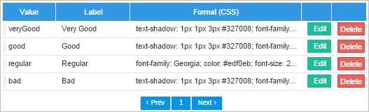
Note: The Actions By Email validates variables correctly that are send by email. These variables are decrypted correctly in Actions by Email URLs.
Example - Custom Actions
Recall the Using a Field to Generate Action Links example described before, in which the supervisor approves or rejects the request of the employee.
This was the email received by the supervisor with the action links:
Use the custom actions option to highlight the response actions, making the "Approve" button green and the "Reject" button red.
Use the following CSS code for the green "Approved" button:
background-color: #5FCF80;
border-style: solid;
border-width: 0px 0px 3px;
box-shadow: 0 -1px 0 rgba(255, 255, 255, 0.1) inset;
color: #FFFFFF;
border-radius: 6px;
display: inline-block;
font-style: normal;
text-align: center;
text-decoration: none;
white-space: nowrap;
font-family: Helvetica;
font-weight: 700;
padding: 13px 33px 13px;
font-size: 15px;
Use the following CSS code for the red "Rejected" button:
border-color: #EA4343;
border-style: solid;
border-width: 0px 0px 3px;
box-shadow: 0 -1px 0 rgba(255, 255, 255, 0.1) inset;
color: #FFFFFF;
border-radius: 6px;
display: inline-block;
font-style: normal;
text-align: center;
text-decoration: none;
white-space: nowrap;
font-family: Helvetica;
font-weight: 700;
padding: 13px 33px 13px;
font-size: 15px;
Now, use those code lines in the Options section in the Actions by Email configuration of the "Review Request" task.
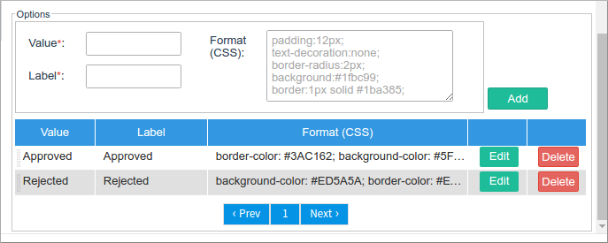
Only the configuration will change for this example; use the same trigger and Dynaforms in the process. Run a case and the following email will be received by the supervisor:

The supervisor is now capable of sending the response using these customized buttons, as in the previous case.
Customized Messages After Submitting the Answer - Custom Actions
The messages displayed after submitting an answer have labels that can be customized by editing the processmaker.en.po translation file. These labels are located in the translation file and they are:
- ID_ABE_ANSWER_SUBMITTED: Message label displayed after submitting the answer.
- ID_ABE_RESPONSE_SENT: Message label displayed after submitting the answer and again is clicked the action link.
Customizing the actionsByEmail.html Template
It is possible to customize the template by adding case variables and additional information related to the Dynaform, process, case, etc. To find the actionsByEmail.html template, go to the Templates option and the template will be listed:

Click on Edit and the following window will appear:
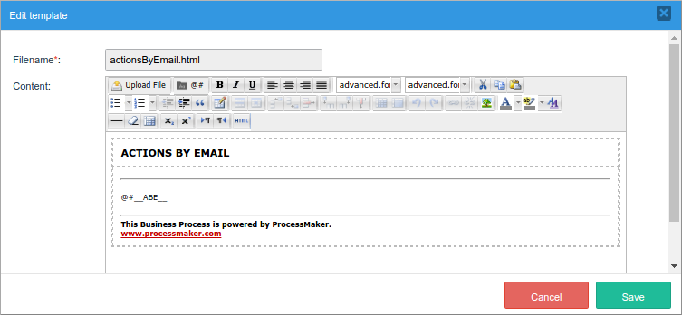
This template is characterized by having the @#__ABE__ variable where all the information related to the Actions by Email is stored. It is mandatory to keep the @#__ABE__ variable even if a new template is created.
Modify its html using Dynaform variables. The template will look something like this:
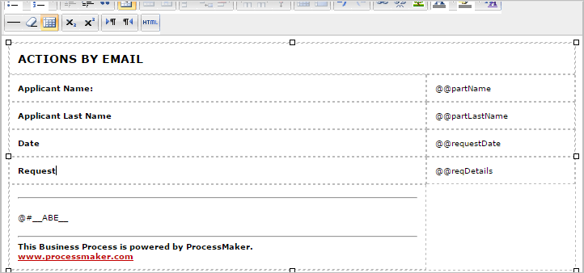
When the process where the actions by email are configured is executed, the user will receive the following custom email:
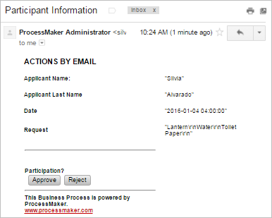
Actions by Email Log
When a case is executed after configuring the Actions By Email option, all messages sent will be registered in the Actions by Email log. It is useful to have a registry of which messages were sent or which weren't. Log into ProcessMaker with a user such as the "admin", who has the PM_SETUP permission in their role. Then, go to ADMIN > Logs and click on the Actions by Email option:
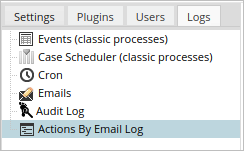
A list of the emails that have been sent displays:
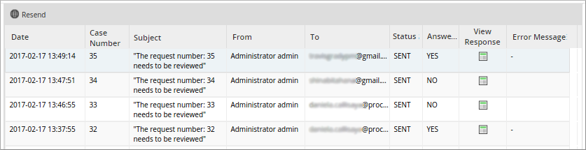
Where:
- Resend: Resends the email sent from a task that hasn't been responded to yet. Select a record from the list and click the Resend button at the top left-hand side of the list.
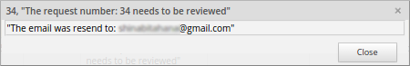
If the task is complete, the email cannot be resent and the following message will be displayed:
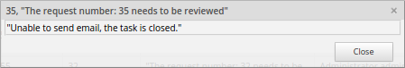
- Date: The date when the email was sent.
- Case Number: The case number of the sent message.
- Subject: The subject of the email.
- From: The email address from which the email was sent.
- To: The email of the user who received the email.
- Sent: The status of the email. If the email was sent, the status will be "SENT". Otherwise, it will display an error status.
- Answered: If the form sent through the email link was filled in or, if any of the email action buttons were clicked, the message in this column will be "YES". If the email was not answered yet, the message will be "NO".
-
View Response: By clicking the response icon, the email answered opens in a new window that shows the fields filled in during the process. This column is related to the Answered column. If the value in the Answered column is YES, then the window displays a message that shows the filled form or the link options.
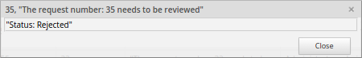
However, if the value in the Answered column is NO, the window displays the following message:
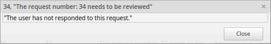
As of ProcessMaker 3.3.1 if the cases do not have a response handled in ProcessMaker, the response window displays the message No response available, please review the case information.
- Message: If any error occurs while a message is being sent, it will be described in this column.